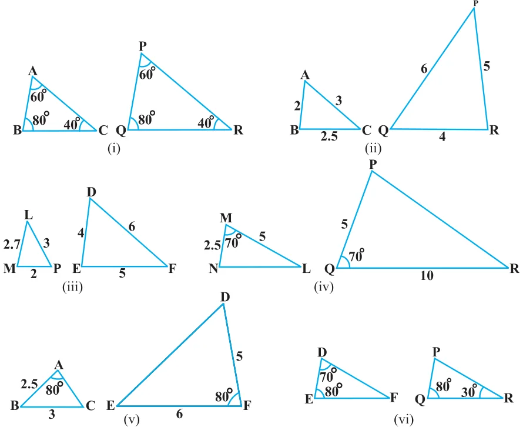
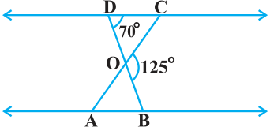
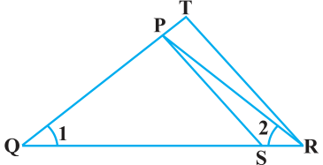
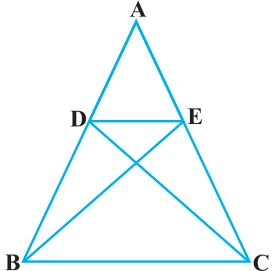
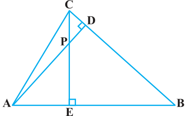
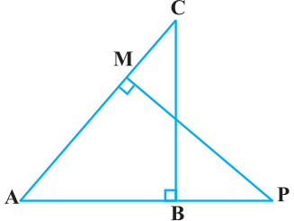
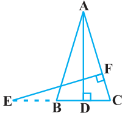
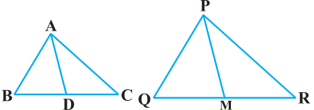

EXERCISE 6.3
- 1.State which pairs of triangles in Fig. 6.34 are similar. Write the similarity criterion used by you for answering the question and also write the pairs of similar triangles in the symbolic form :

- 2.In Fig. 6.35, \(\triangle ODC \sim \triangle OBA\), \(\angle BOC = 125^{\circ}\) and \(\angle CDO = 70^{\circ}\). Find \(\angle DOC\), \(\angle DCO\) and \(\angle OAB\).

- 3.Diagonals AC and BD of a trapezium ABCD with \(AB \parallel DC\) intersect each other at the point O. Using a similarity criterion for two triangles, show that \(\dfrac{OA}{OC} = \dfrac{OB}{OD}\).
- 4.In Fig. 6.36, \(\dfrac{QR}{QS} = \dfrac{QT}{PR}\) and \(\angle 1 = \angle 2\). Show that \(\triangle PQS \sim \triangle TQR\).

- 5.S and T are points on sides PR and QR of \(\triangle PQR\) such that \(\angle P = \angle RTS\). Show that \(\triangle RPQ \sim \triangle RTS\).
- 6.In Fig. 6.37, if \(\triangle ABE \cong \triangle ACD\), show that \(\triangle ADE \sim \triangle ABC\).

- 7.In Fig. 6.38, altitudes AD and CE of \(\triangle ABC\) intersect each other at the point P. Show that:
- (i)\(\triangle AEP \sim \triangle CDP\)
- (ii)\(\triangle ABD \sim \triangle CBE\)
- (iii)\(\triangle AEP \sim \triangle ADB\)
- (iv)\(\triangle PDC \sim \triangle BEC\)

- 8.E is a point on the side AD produced of a parallelogram ABCD and BE intersects CD at F. Show that \(\triangle ABE \sim \triangle CFB\).
- 9.In Fig. 6.39, ABC and AMP are two right triangles, right angled at B and M respectively. Prove that:
- (i)\(\triangle ABC \sim \triangle AMP\)
- (ii)\(\dfrac{CA}{PA} = \dfrac{BC}{MP}\)

- 10.CD and GH are respectively the bisectors of \(\angle ACB\) and \(\angle EGF\) such that D and H lie on sides AB and FE of \(\triangle ABC\) and \(\triangle EFG\) respectively. If \(\triangle ABC \sim \triangle FEG\), show that:
- (i)\(\dfrac{CD}{GH} = \dfrac{AC}{FG}\)
- (ii)\(\triangle DCB \sim \triangle HGE\)
- (iii)\(\triangle DCA \sim \triangle HGF\)
- 11.In Fig. 6.40, E is a point on side CB produced of an isosceles triangle ABC with \(AB = AC\). If \(AD \perp BC\) and \(EF \perp AC\), prove that \(\triangle ABD \sim \triangle ECF\).

- 12.Sides AB and BC and median AD of a triangle ABC are respectively proportional to sides PQ and QR and median PM of \(\triangle PQR\) (see Fig. 6.41). Show that \(\triangle ABC \sim \triangle PQR\).

- 13.D is a point on the side BC of a triangle ABC such that \(\angle ADC = \angle BAC\). Show that \(CA^{2} = CB \cdot CD\).
- 14.Sides AB and AC and median AD of a triangle ABC are respectively proportional to sides PQ and PR and median PM of another triangle PQR. Show that \(\triangle ABC \sim \triangle PQR\).
- 15.A vertical pole of length 6 m casts a shadow 4 m long on the ground and at the same time a tower casts a shadow 28 m long. Find the height of the tower.
- 16.If AD and PM are medians of triangles ABC and PQR, respectively where \(\triangle ABC \sim \triangle PQR\), prove that \(\dfrac{AB}{PQ} = \dfrac{AD}{PM}\).